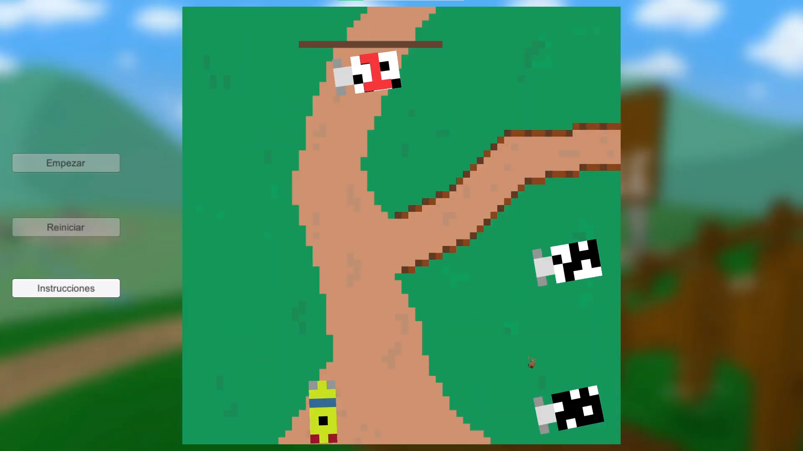

In-Game Pictures
(Reload the page if you see the images overlapped :) )


Nashville Gameplay
Here you have a full gameplay of the videogame in case you want to see more. Bear in mind that when you play it, your choices in every minigame can lead to a different end, so it can be different from this one.
Interview
Here you have an interview made by Planeta Debug to know more about the game and about me.
About the project
This was an iniciative between the degree and Planeta Debug in order to create videogames telated to the climate change.
This game was made by a team of 5 people, including myself, as a final project for three different subjects together,
focused on different aspects of the videogame development such as art, programming, game behaviour and project managment.
As a team, we were mainly 3 programmers and 2 artist but, due to the brief time to develop the game and our desire to make a good game, all of us did scripts as well as drawing assets for the different minigames.
Also, the main goal of the project was to do something related to the climate change so every group was assigned to a research team of different fields.
In our case we were assigned to the Laboratorio de Economía Experimental (LEE).
This group taught us the importance of thinking us a colective rather than as individuals, so we tried to show this through the different minigames.
About the game
In Nashville you will be playing as Garret, who is send to this village because he has to do community service due to his bad past. In order to leave Nashville, the mayor will give you different tasks for each week, so you will have to help the different villagers.
But, be careful!! The future of the village is in your hands!! Depending on how you complete those tasks (minigames), it will influence in the mood of the people towards you and their future.
About my work
About my work, I did 3 minigames with theirown assets and part of the dialogue system mainly.

The first minigame is the initial one. The farmer will aske you for help because the cows have escape from the farm.
You will have to select the cows in the right order so they don't crash into each other or with the taxi.
It was made with a simple waypoint method for each cow, so they would follow always the same path.
The only thing that changes when you select the cows is the speed of each one.
In this second minigame, you have to help the fruit seller to refill her fruit shop. In order to do so, you have to go to the farm to pick up
the fruit.
At the start of the minigame a group of fruit and vegetables will appear on the left of the screen, as well as a backpack on the other side.
Then, you have to decide how many of them you want to save in the backpack. To do so is simple, just click left and drag them into the backpack. Also you can rotate them with the right click.
Be careful about your choices!!
The final minigame is about recycling. A bunch of cards will be shown on the right of the screen as well as three waste bins on the left.
Your task is to memorize all the cards in a small time. When the time is over, those cards will flip over and you will have to drag them into the correct waste bin.